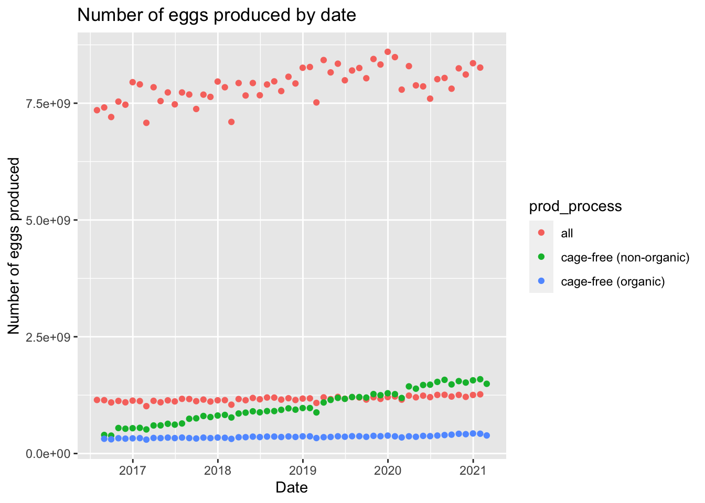
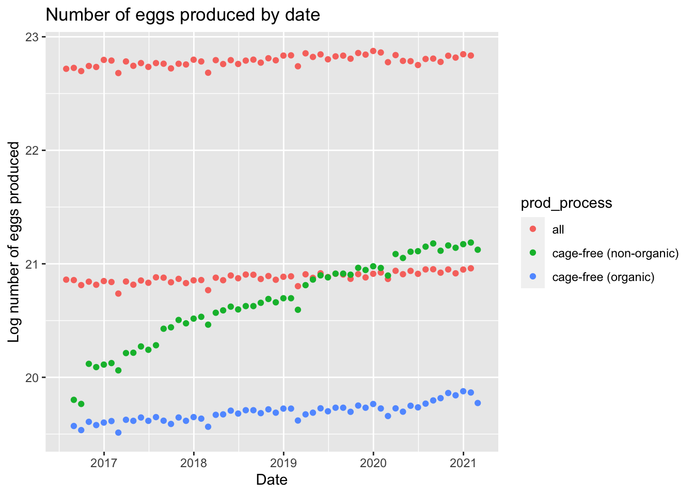
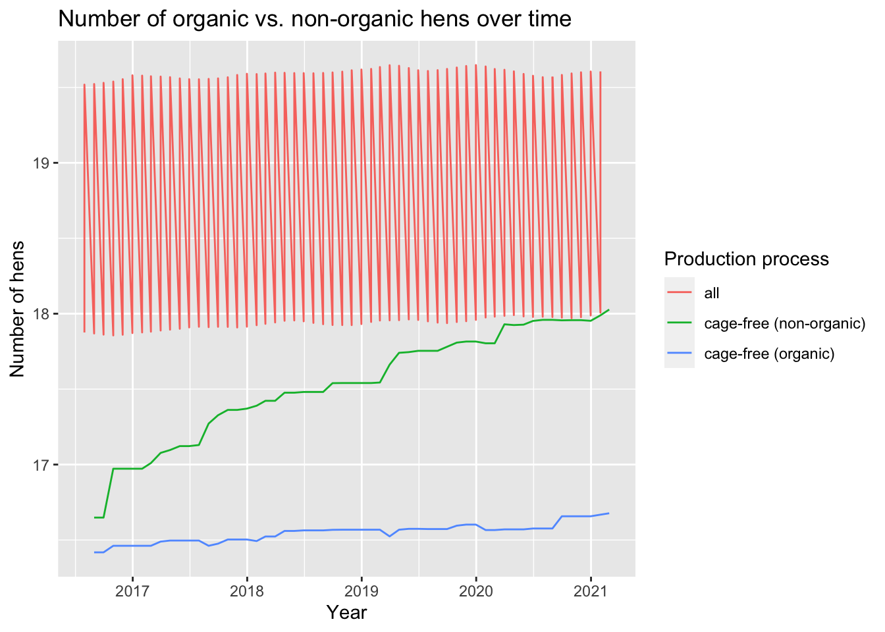
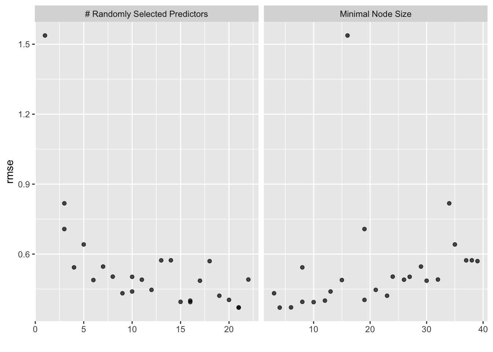
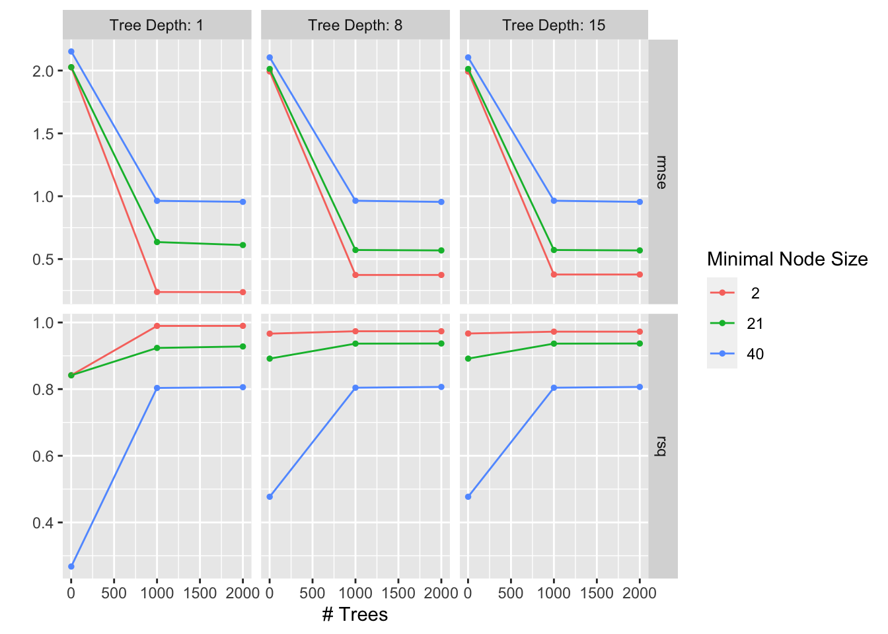

This dataset tracks the supply of cage-free eggs in the United States from December 2007 to February 2021. For TidyTuesday we’ve used data through February 2021, but the full dataset, with data through the present, is available in the OSF project.
1) Load, wrangle and explore the data. By now you know this is an iterative procedure, so it’s ok to have these parts of the process/code intertwined.
Attaching package: 'rpart'
The following object is masked from 'package:dials':
prune
library('rpart.plot')library('glmnet')
Loading required package: Matrix
Attaching package: 'Matrix'
The following objects are masked from 'package:tidyr':
expand, pack, unpack
Loaded glmnet 4.1-6
library('ranger')library('vip')
Attaching package: 'vip'
The following object is masked from 'package:utils':
vi
library('janitor')
Attaching package: 'janitor'
The following objects are masked from 'package:stats':
chisq.test, fisher.test
library('bonsai')library('lightgbm')
Loading required package: R6
Attaching package: 'lightgbm'
The following object is masked from 'package:dplyr':
slice
Get the data
library(tidytuesdayR) #read in `tidytuesdayR`tuesdata <- tidytuesdayR::tt_load('2023-04-11')
--- Compiling #TidyTuesday Information for 2023-04-11 ----
--- There are 2 files available ---
--- Starting Download ---
Downloading file 1 of 2: `egg-production.csv`
Downloading file 2 of 2: `cage-free-percentages.csv`
--- Download complete ---
tuesdata <- tidytuesdayR::tt_load(2023, week =15)
--- Compiling #TidyTuesday Information for 2023-04-11 ----
--- There are 2 files available ---
--- Starting Download ---
Downloading file 1 of 2: `egg-production.csv`
Downloading file 2 of 2: `cage-free-percentages.csv`
--- Download complete ---
#load in readme and datasets for this weeksummary(tuesdata)
Length Class Mode
egg-production 6 spec_tbl_df list
cage-free-percentages 4 spec_tbl_df list
# A tibble: 220 × 6
observed_month prod_type prod_process n_hens n_eggs source
<date> <chr> <chr> <dbl> <dbl> <chr>
1 2016-07-31 hatching eggs all 57975000 1147000000 ChicEggs-09-23…
2 2016-08-31 hatching eggs all 57595000 1142700000 ChicEggs-10-21…
3 2016-09-30 hatching eggs all 57161000 1093300000 ChicEggs-11-22…
4 2016-10-31 hatching eggs all 56857000 1126700000 ChicEggs-12-23…
5 2016-11-30 hatching eggs all 57116000 1096600000 ChicEggs-01-24…
6 2016-12-31 hatching eggs all 57750000 1132900000 ChicEggs-02-28…
7 2017-01-31 hatching eggs all 57991000 1123400000 ChicEggs-03-21…
8 2017-02-28 hatching eggs all 58286000 1014500000 ChicEggs-04-21…
9 2017-03-31 hatching eggs all 58735000 1128500000 ChicEggs-05-22…
10 2017-04-30 hatching eggs all 59072000 1097200000 ChicEggs-06-23…
# … with 210 more rows
summary(eggproduction)
observed_month prod_type prod_process n_hens
Min. :2016-07-31 Length:220 Length:220 Min. : 13500000
1st Qu.:2017-09-30 Class :character Class :character 1st Qu.: 17284500
Median :2018-11-15 Mode :character Mode :character Median : 59939500
Mean :2018-11-14 Mean :110839873
3rd Qu.:2019-12-31 3rd Qu.:125539250
Max. :2021-02-28 Max. :341166000
n_eggs source
Min. :2.981e+08 Length:220
1st Qu.:4.240e+08 Class :character
Median :1.155e+09 Mode :character
Mean :2.607e+09
3rd Qu.:2.963e+09
Max. :8.601e+09
skim(eggproduction)
Data summary
Name
eggproduction
Number of rows
220
Number of columns
6
_______________________
Column type frequency:
character
3
Date
1
numeric
2
________________________
Group variables
None
Variable type: character
skim_variable
n_missing
complete_rate
min
max
empty
n_unique
whitespace
prod_type
0
1
10
13
0
2
0
prod_process
0
1
3
23
0
3
0
source
0
1
23
23
0
108
0
Variable type: Date
skim_variable
n_missing
complete_rate
min
max
median
n_unique
observed_month
0
1
2016-07-31
2021-02-28
2018-11-15
56
Variable type: numeric
skim_variable
n_missing
complete_rate
mean
sd
p0
p25
p50
p75
p100
hist
n_hens
0
1
110839873
124121204
13500000
17284500
59939500
125539250
341166000
▇▁▁▁▂
n_eggs
0
1
2606667580
3082457619
298074240
423962023
1154550000
2963010996
8601000000
▇▁▁▁▂
Simple plots for eggproduction
# plot number of eggs produced over timeeggtimeplot <-ggplot(eggproduction)+geom_point(aes(observed_month, n_eggs, color = prod_process))+#color the data by production processlabs(title ="Number of eggs produced by date", x ="Date", y ="Number of eggs produced")eggtimeplot

Let’s put this on a log scale so the data is more interpretable
eggtimeplot2 <-ggplot(eggproduction, aes(observed_month, log(n_eggs)))+#log scale the eggs for greater interpretabilitygeom_point(aes(color = prod_process))+labs(title ="Number of eggs produced by date", x ="Date", y ="Log number of eggs produced")eggtimeplot2

Summary stats for cagefreepercentages
tibble(cagefreepercentages)
# A tibble: 96 × 4
observed_month percent_hens percent_eggs source
<date> <dbl> <dbl> <chr>
1 2007-12-31 3.2 NA Egg-Markets-Overview-2019-10-19.pdf
2 2008-12-31 3.5 NA Egg-Markets-Overview-2019-10-19.pdf
3 2009-12-31 3.6 NA Egg-Markets-Overview-2019-10-19.pdf
4 2010-12-31 4.4 NA Egg-Markets-Overview-2019-10-19.pdf
5 2011-12-31 5.4 NA Egg-Markets-Overview-2019-10-19.pdf
6 2012-12-31 6 NA Egg-Markets-Overview-2019-10-19.pdf
7 2013-12-31 5.9 NA Egg-Markets-Overview-2019-10-19.pdf
8 2014-12-31 5.7 NA Egg-Markets-Overview-2019-10-19.pdf
9 2015-12-31 8.6 NA Egg-Markets-Overview-2019-10-19.pdf
10 2016-04-30 9.9 NA Egg-Markets-Overview-2016-12-02.pdf
# … with 86 more rows
summary(cagefreepercentages)
observed_month percent_hens percent_eggs source
Min. :2007-12-31 Min. : 3.20 Min. : 9.557 Length:96
1st Qu.:2017-05-23 1st Qu.:13.46 1st Qu.:14.521 Class :character
Median :2018-11-15 Median :17.30 Median :16.235 Mode :character
Mean :2018-05-12 Mean :17.95 Mean :17.095
3rd Qu.:2020-02-28 3rd Qu.:23.46 3rd Qu.:19.460
Max. :2021-02-28 Max. :29.20 Max. :24.546
NA's :42
skim(cagefreepercentages)
Data summary
Name
cagefreepercentages
Number of rows
96
Number of columns
4
_______________________
Column type frequency:
character
1
Date
1
numeric
2
________________________
Group variables
None
Variable type: character
skim_variable
n_missing
complete_rate
min
max
empty
n_unique
whitespace
source
0
1
8
35
0
31
0
Variable type: Date
skim_variable
n_missing
complete_rate
min
max
median
n_unique
observed_month
0
1
2007-12-31
2021-02-28
2018-11-15
91
Variable type: numeric
skim_variable
n_missing
complete_rate
mean
sd
p0
p25
p50
p75
p100
hist
percent_hens
0
1.00
17.95
6.58
3.20
13.46
17.30
23.46
29.20
▂▅▇▆▆
percent_eggs
42
0.56
17.10
4.29
9.56
14.52
16.23
19.46
24.55
▆▇▇▆▇
Simple plots for cagefreepercentages
We can start with looking at cage free eggs
ggplot(cagefreepercentages, aes(x = observed_month, y = percent_eggs)) +geom_area() +labs(title ="Proportion of eggs produced which are cage-free over time", x="Year", y="Percentage")
ggplot(cagefreepercentages, aes(x = observed_month, y = percent_hens)) +geom_area() +labs(title ="Proportion of hens producing eggs which are cage-free over time", x="Year", y="Percentage")
Warning in inner_join(cagefreepercentages, eggproduction, by = "observed_month"): Each row in `x` is expected to match at most 1 row in `y`.
ℹ Row 11 of `x` matches multiple rows.
ℹ If multiple matches are expected, set `multiple = "all"` to silence this
warning.
# A tibble: 220 × 5
observed_month prod_type prod_process n_hens n_eggs
<date> <chr> <chr> <dbl> <dbl>
1 2016-07-31 hatching eggs all 57975000 1147000000
2 2016-08-31 hatching eggs all 57595000 1142700000
3 2016-09-30 hatching eggs all 57161000 1093300000
4 2016-10-31 hatching eggs all 56857000 1126700000
5 2016-11-30 hatching eggs all 57116000 1096600000
6 2016-12-31 hatching eggs all 57750000 1132900000
7 2017-01-31 hatching eggs all 57991000 1123400000
8 2017-02-28 hatching eggs all 58286000 1014500000
9 2017-03-31 hatching eggs all 58735000 1128500000
10 2017-04-30 hatching eggs all 59072000 1097200000
# … with 210 more rows
#adding new variable about eggs per henfinaldata <- cleandata %>%mutate(egg_production = n_eggs/n_hens)summary(finaldata)
observed_month prod_type prod_process n_hens
Min. :2016-07-31 Length:220 Length:220 Min. : 13500000
1st Qu.:2017-09-30 Class :character Class :character 1st Qu.: 17284500
Median :2018-11-15 Mode :character Mode :character Median : 59939500
Mean :2018-11-14 Mean :110839873
3rd Qu.:2019-12-31 3rd Qu.:125539250
Max. :2021-02-28 Max. :341166000
n_eggs egg_production
Min. :2.981e+08 Min. :17.03
1st Qu.:4.240e+08 1st Qu.:20.66
Median :1.155e+09 Median :23.25
Mean :2.607e+09 Mean :22.43
3rd Qu.:2.963e+09 3rd Qu.:24.03
Max. :8.601e+09 Max. :25.56
ggplot() +geom_line(data = finaldata, aes(observed_month, log(n_hens), color = prod_process)) +ggtitle("Number of organic vs. non-organic hens over time") +labs(x ="Year", y ="Number of hens", color ="Production process" )

The all category is a bit confusing but we can deal with that a bit later.
2) Once you understand the data sufficiently, formulate a question/hypothesis. This will determine your outcome of interest and, if applicable, main predictor(s) of interest.
Research question of interest: are more eggs produced per hen in cage-free non-organic facilities compared to cage-free organic facilities?
Outcome of interest: egg production
Predictor: production process
Final wrangling based on research question
3) Then split into train/test.
Splitting the data
#fix random numbersset.seed(123) #split data into 70% training, 30% testingsplit <-initial_split(finaldata, prop =7/10, strata = n_eggs) # Create data frames for the two sets:train_data <-training(split)test_data <-testing(split)
Null model
Build the null model
#setting up null modelnullmod <-null_model() %>%set_engine("parsnip") %>%set_mode("regression")#setting up the null recipenull_recipe <-recipe(egg_production ~ ., data = train_data) %>%step_date(observed_month) %>%#changes date column into nominalstep_rm(observed_month) %>%#removes original date columnstep_dummy(all_nominal_predictors()) #creates dummy variables for predictors#setting up the null workflownull_workflow <-workflow() %>%add_model(nullmod) %>%add_recipe(null_recipe)#fit null model to training datanullmod_fit <- null_workflow %>%fit(data = train_data)
Now we calculate the rmse since it is a regression with a continuous outcome
#make predictions on TRAINING data using null modelnull_predtrain <-augment(nullmod_fit, train_data) %>%rmse(truth = egg_production, .pred) %>%mutate(model ="Null")null_predtrain
# A tibble: 1 × 4
.metric .estimator .estimate model
<chr> <chr> <dbl> <chr>
1 rmse standard 2.20 Null
Apply to testing data
#make predictions on TESTING data using null modelnull_predtest <-augment(nullmod_fit, test_data) %>%rmse(egg_production, .pred) %>%mutate(model ="Null")null_predtest
# A tibble: 1 × 4
.metric .estimator .estimate model
<chr> <chr> <dbl> <chr>
1 rmse standard 2.15 Null
Compared to the training data, the testing data performed slightly better since the test RMSE is slightly lower than the train RMSE.
4) Fit at least 4 different ML models to the data using the tidymodels framework we practiced. Use the CV approach for model training/fitting. Explore the quality of each model by looking at performance, residuals, uncertainty, etc. All of this should still be evaluated using the training/CV data.
Setting up for all our models
set.seed(456) #for reproducibilityfolds <-vfold_cv(train_data, v =5) #CV folds#basic recipe used in all modelsegg_recipe <-recipe(egg_production ~., data = train_data) %>%step_date(observed_month) %>%#change date column into nominalstep_rm(observed_month) %>%#remove original date columnstep_dummy(all_nominal_predictors()) #create dummy variables for predictors
Model #1 Decision Tree
Set up model and workflow
#set decision tree model regressiondt_model <-decision_tree(min_n =tune(),tree_depth =tune(),cost_complexity =tune()) %>%set_engine("rpart") %>%set_mode("regression")#create machine learning workflowdt_workflow <-workflow() %>%add_model(dt_model) %>%add_recipe(egg_recipe)
#summary of best model to be used for later comparisoncompare_dt <- dt_res %>%show_best("rmse", n=1) %>%select(c(.metric, mean, std_err)) %>%mutate(model ="Decision Tree")#set up workflowdt_workflow_final <- dt_workflow %>%finalize_workflow(best_dt)#fit the final modeldt_fit_final<- dt_workflow_final %>%fit(train_data) #extract RMSE valuefinalfitted_dt <-augment(dt_fit_final, train_data)finalfitted_dt_rmse <- finalfitted_dt%>%select(egg_production, .pred) %>%rmse(truth = egg_production, .pred)%>%mutate(model ="Decision Tree")finalfitted_dt_rmse
# A tibble: 1 × 4
.metric .estimator .estimate model
<chr> <chr> <dbl> <chr>
1 rmse standard 0.124 Decision Tree
The best performing decision tree model has an RMSE of 0.019, cost complexity value of 3.162278e-06, tree_depth of 15, and a mininum node size of 2.
Lastly let’s plot the tree
rpart.plot(extract_fit_parsnip(dt_fit_final)$fit)
Warning: Cannot retrieve the data used to build the model (so cannot determine roundint and is.binary for the variables).
To silence this warning:
Call rpart.plot with roundint=FALSE,
or rebuild the rpart model with model=TRUE.
Warning: labs do not fit even at cex 0.15, there may be some overplotting
#set random forest modelrf_model <-rand_forest(mtry =tune(), #parameter to tune based on enginemin_n =tune(), trees =1000) %>%set_engine("ranger", num.threads = cores) %>%#number of threads for processingset_mode("regression")#set workflowrf_workflow <-workflow() %>%add_model(rf_model) %>%add_recipe(egg_recipe)
Tune parameters using CV folds
set.seed(456)rf_res <- rf_workflow %>%tune_grid(folds,grid =25, control =control_grid(save_pred =TRUE), metrics =metric_set(rmse))
i Creating pre-processing data to finalize unknown parameter: mtry
Plot and collect metrics
rf_res %>%autoplot()

rf_res %>%collect_metrics()
# A tibble: 25 × 8
mtry min_n .metric .estimator mean n std_err .config
<int> <int> <chr> <chr> <dbl> <int> <dbl> <chr>
1 21 4 rmse standard 0.371 5 0.0323 Preprocessor1_Model01
2 11 26 rmse standard 0.490 5 0.0318 Preprocessor1_Model02
3 14 38 rmse standard 0.573 5 0.0307 Preprocessor1_Model03
4 16 10 rmse standard 0.394 5 0.0308 Preprocessor1_Model04
5 4 8 rmse standard 0.543 5 0.0497 Preprocessor1_Model05
6 1 16 rmse standard 1.54 5 0.0542 Preprocessor1_Model06
7 10 27 rmse standard 0.503 5 0.0351 Preprocessor1_Model07
8 20 19 rmse standard 0.404 5 0.0316 Preprocessor1_Model08
9 3 34 rmse standard 0.818 5 0.0575 Preprocessor1_Model09
10 13 37 rmse standard 0.573 5 0.0292 Preprocessor1_Model10
# … with 15 more rows
#summary of best model compare_rf <- rf_res %>%show_best("rmse", n=1) %>%select(c(.metric, mean, std_err)) %>%mutate(model ="Random Forest")#set up workflowfinal_rf_workflow <- rf_workflow %>%finalize_workflow(best_rf)#fit the final modelfinal_rf_fit <- final_rf_workflow %>%fit(train_data) #get the RMSEfinalfitted_rf <-augment(final_rf_fit, train_data)finalfitted_rf_rmse <- finalfitted_rf %>%select(egg_production, .pred) %>%rmse(truth = egg_production, .pred) %>%mutate(model ="Random Forest")finalfitted_rf_rmse
# A tibble: 1 × 4
.metric .estimator .estimate model
<chr> <chr> <dbl> <chr>
1 rmse standard 0.137 Random Forest
The best random forest model has an RMSE of .137 and a mtry of 21.
Model #4 Boosted tree model
#set boosted tree regression modelbt_model <-boost_tree(tree_depth =tune(), #tuning parameters from engine specstrees =tune(),min_n =tune()) %>%set_engine("lightgbm") %>%set_mode("regression")#create boosted tree workflowbt_workflow <-workflow() %>%add_model(bt_model) %>%add_recipe(egg_recipe)
Tuning grid parameters
#set up tuning grid for cross validationbt_grid <-grid_regular(tree_depth(),trees(),min_n())#tune parameters using cross-validation foldsset.seed(456)bt_res <- bt_workflow %>%tune_grid(resamples = folds,grid = bt_grid,control =control_grid(save_pred =TRUE) )
Plot and collect metrics
bt_res %>%autoplot()

bt_res %>%collect_metrics()
# A tibble: 54 × 9
trees min_n tree_depth .metric .estimator mean n std_err .config
<int> <int> <int> <chr> <chr> <dbl> <int> <dbl> <chr>
1 1 2 1 rmse standard 2.03 5 0.0638 Preprocessor1_…
2 1 2 1 rsq standard 0.842 5 0.0193 Preprocessor1_…
3 1000 2 1 rmse standard 0.238 5 0.0265 Preprocessor1_…
4 1000 2 1 rsq standard 0.990 5 0.00221 Preprocessor1_…
5 2000 2 1 rmse standard 0.237 5 0.0225 Preprocessor1_…
6 2000 2 1 rsq standard 0.990 5 0.00181 Preprocessor1_…
7 1 21 1 rmse standard 2.03 5 0.0638 Preprocessor1_…
8 1 21 1 rsq standard 0.842 5 0.0193 Preprocessor1_…
9 1000 21 1 rmse standard 0.635 5 0.0422 Preprocessor1_…
10 1000 21 1 rsq standard 0.924 5 0.0103 Preprocessor1_…
# … with 44 more rows
Selecting best model
#select best tree modelbest_bt <- bt_res %>%select_best("rmse")best_bt
# A tibble: 1 × 4
trees min_n tree_depth .config
<int> <int> <int> <chr>
1 2000 2 1 Preprocessor1_Model03
#summary of best modelcompare_bt <- bt_res %>%show_best("rmse", n=1) %>%select(c(.metric, mean, std_err)) %>%mutate(model ="Boosted Tree")#set up workflowbtfinal_workflow <- bt_workflow %>%finalize_workflow(best_bt)#fit the final modelbt_fit_final <- btfinal_workflow %>%fit(train_data) #extract RMSE valuefinalfitted_bt <-augment(bt_fit_final, train_data)finalfitted_bt_rmse <- finalfitted_bt %>%select(egg_production, .pred) %>%rmse(truth = egg_production, .pred)%>%mutate(model ="Boosted Tree")finalfitted_bt_rmse
# A tibble: 1 × 4
.metric .estimator .estimate model
<chr> <chr> <dbl> <chr>
1 rmse standard 0.143 Boosted Tree
The best boosted tree model has an RMSE of 0.143, 2000 trees, minimal node size of 2, and a tree depth of 1.
5) Based on the model evaluations, decide on one model you think is overall best. Explain why. It doesn’t have to be the model with the best performance. You make the choice, just explain why you picked the one you picked.
# A tibble: 5 × 4
.metric .estimator .estimate model
<chr> <chr> <dbl> <chr>
1 rmse standard 2.20 Null
2 rmse standard 0.314 Linear Regression (LASSO)
3 rmse standard 0.137 Random Forest
4 rmse standard 0.124 Decision Tree
5 rmse standard 0.143 Boosted Tree
All models performed better than the null model. Based on the RMSE values, the linear regression performed the worst of all models and the decision tree model, boosted tree model, and random forest model all are neck and neck in terms of RMSE, with the lowest RMSE being produced via decision tree. So we will move forward with the decision tree model.
6) As a final, somewhat honest assessment of the quality of the model you chose, evaluate it (performance, residuals, uncertainty, etc.) on the test data. This is the only time you are allowed to touch the test data, and only once. Report model performance on the test data.
#fit final model to test datadt_test_fit <- dt_workflow_final %>%last_fit(split) #uses best model on test data#metrics from final modeldt_test_fit %>%collect_metrics()
# A tibble: 2 × 4
.metric .estimator .estimate .config
<chr> <chr> <dbl> <chr>
1 rmse standard 0.397 Preprocessor1_Model1
2 rsq standard 0.968 Preprocessor1_Model1
Compare with null model
null_predtest
# A tibble: 1 × 4
.metric .estimator .estimate model
<chr> <chr> <dbl> <chr>
1 rmse standard 2.15 Null
The decision tree model performed better than the null model on the test data. The model did perform worse on test data compared to training data, but this is okay.
7) Summarize everything you did and found in a discussion. Of course, your Rmd file should contain commentary/documentation on everything you do for each step.
Discussion
In this exercise, I used cross-validation to tune 4 models attempting to predict egg_production from three predictors (prod_type, prod_process, and observed_month). The four models (decision tree, random forest, LASSO, and boosted tree model) all performed better than the null model. Due to the small residual values, low RMSE value, I choose to move forward with the decision tree model for the final test data fit. This final fit had a RMSE of 0.396 and an R^2 of 0.968, which led me to believe the model is performing well on the new data.